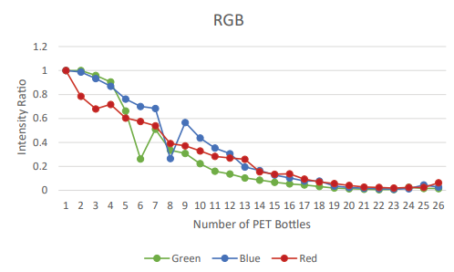

INTRODUCTION
I was researching evaluation tools in class. I discovered that if you fill a PET bottle with water, add a few drops of floor wax, and shine a flashlight on it,the bottle will shine brightly. I knew that it could lead to figuring out why the sky was blue, so I decided to look into it.
PURPOSE
To find how much light passes though a liquid.
To study the effect of diferent lights travel though a liquid.
METHOD
- Line up 26 PET bottles
- Put the water into the platic bottles
- Put 5 drops of floor wax. I used floor wax because the particles are small.
- Place the flashlight behind the bottles
- Change the color of the flashlight and count how many plastic bottles does the light pass through
- Evaluate which color light passes though a longer or shorter distance
How to evaluate the color?
- Draw the straight line
- Evaluate the color of the middle of the plastic bottle on the line.

For the camera used, the aperture and exposure were constant, but the shutter speed was not the same. This graph illustrates the sum of the RGB values compared to the number of PET bottles in the line.

According to this graph, we can see that the blue and green light has the highest decrease in intensity ratio than red light. The red light ‘s intensity ratio is slowly decreasing.